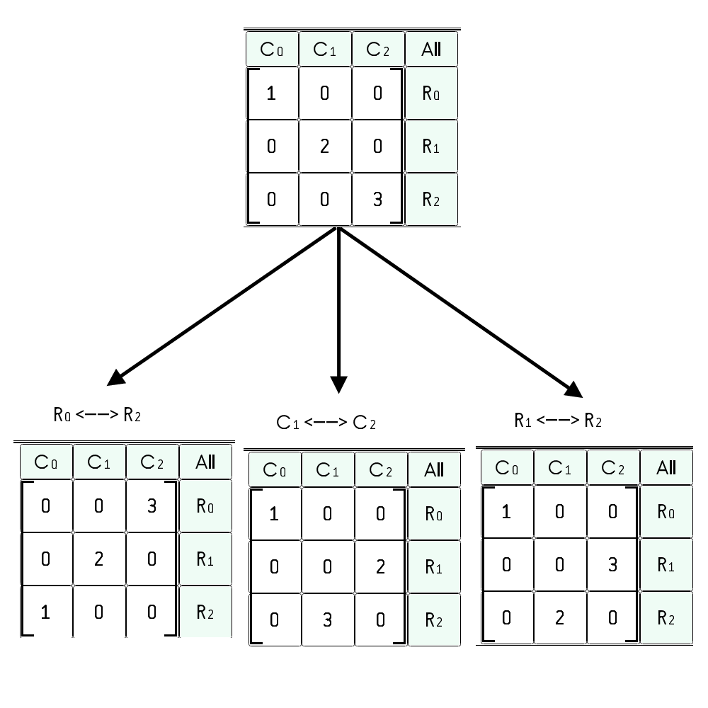

| Project | Description |
|---|---|
|  | Summers CAMP. I received a Summer Undergraduate Research Fellowship to develop this program, which allows linear algebra students to solve computational problems at the granularity of row, column, and matrix operations, rather than repetitive arithmetic. Please see here for more information about this project. |
| Hump Yard. Hump Yard is a board game about data structures and algorithms in the context of a rail classification yard. I've been developing it ever since I worked at Union Pacific Railroad in the Summer of 2014. I iterated on it over 30 times in the summer of 2017 and have exhibited it at the Gen Con Adventure Gaming convention in Indianapolis. I also received the 2014 - 2015 Henry Armero Award to help fund the original prototypes. Please see here for an example rules document that is out of date, but none the less should shed some light on the mechanics of the game. |
|
| Sim Urban. Work in Progress. I am working with New York University Transportation Engineers to create Sim Urban, a computer game about multi-modal transportation networks. We plan to someday use the game as an academic competition for students as well as a tool for informing the general public whose lives are affected by transportation, but whom have not received any formal training in the subject. I am currently working on a journal article describing a survey instrument that may be used to assess the effectiveness of a related class of games for stealth assesment. |
|
 |
Graphics Diner. Work in Progress. I have a dream of making the field of computer graphics more accessible through the creation of a graphic novel. I would also like it to be easier to produce compelling imagery about the various fields that computer graphics draws from, including perception, light, materiality, geometry, topology, and computer systems. Here is a link to a pdf of a draft of the book. Here is a link to a draft of the content of the book. |
| Bryce Graphics Language. This project is one of several that I've created on the theme of visualizing the structure and flow of executing programs. It shows the separation and connections between regions of memory while an algorithm is being executed. It also shows concepts such as scope and shadowing. I hope to make the next iteration in this line of inquiry based on the algorithms I'm developing with my Sim Urban project. |